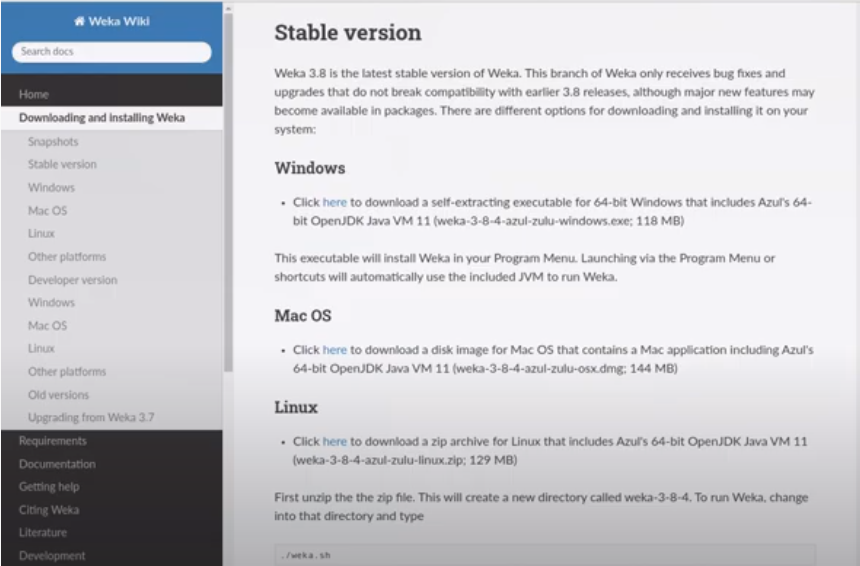
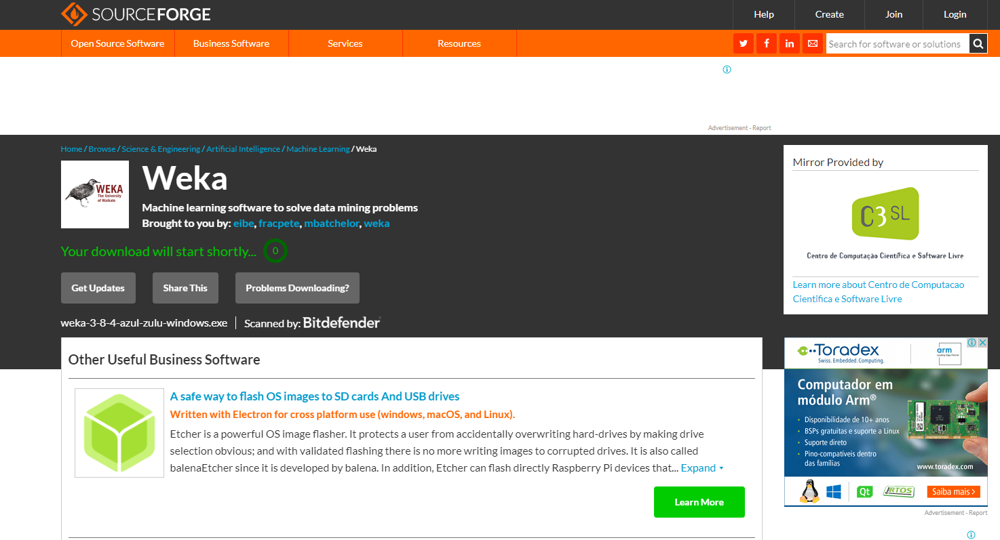
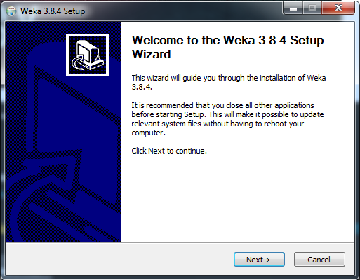
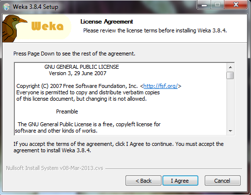
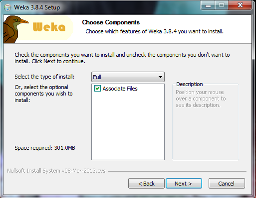
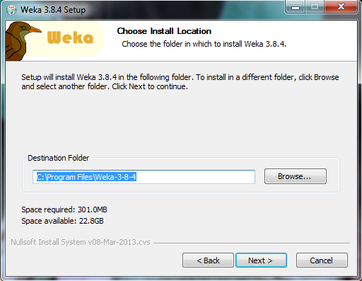
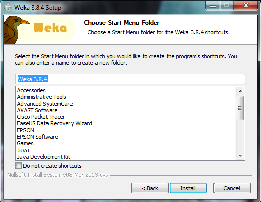
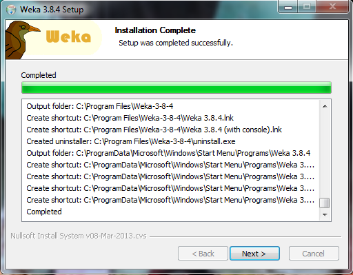

Weka é um Software livre do tipo open source para mineração de dados, desenvolvido em Java. Ao longo dos últimos anos se consolidou como a ferramenta de mineração de dados mais utilizada em ambiente acadêmico. Embora a ferramenta possua como ponto forte a mineração de classificadores em bases de dados, também pode ser utilizada para executar outras tarefas, especialmente a mineração de regras de associação. A ferramenta Weka trabalha com arquivos de entrada no formato ARFF, que corresponde a um arquivo texto contendo um conjunto de observações, precedido por um pequeno cabeçalho. O cabeçalho é utilizado para fornecer informações a respeito dos campos que compõem o conjunto de observações. É importante observar que o formato ARFF foi originalmente proposto para a mineração de classificadores; no entanto, ele pode ser "adaptado" para a mineração de regras de associação. Essa adaptação resulta em uma base de dados com uma estrutura um pouco esquisita, porém capaz de ser manipulada pela ferramenta.
Exemplo: Cabeçalho: @relation "Transacoes" - Declaração Da Redação @attribute I1 {y, n} @attribute I2 {y, n} @attribute I3 {y, n} @attribute I4 {y, n} @attribute I5 {y, n} @attribute I6 {y, n} Dados: @data y,y,?,?,y,? ?,y,?,y,?,? ?,y,y,?,?,? y,y,?,y,?,? y,?,y,?,?,? ?,y,y,?,?,? y,?,y,?,?,? y,y,y,?,y,? y,y,y,?,?,?As declarações dos atributos são feitas através de uma sequência de linhas @attribute. A ordem da declaração indica a posição de cada atributo na seção data. A base de dados é colocada abaixo do parâmetro @data. Consiste em uma lista de todas as instâncias com os valores dos atributos para cada instância, separados por vírgulas. Cada um em uma linha única. Os atributos devem aparecer na ordem em que são declarados no cabeçalho.
Para instalar primeiro entre no site oficial do weka, https://www.cs.waikato.ac.nz/ml/weka/, e depois clica em download.

Depois você deve escolher a versão compativel com seu sistema operacional, aparecendo uma aba com as versões disponiveis.
Ao escolher a versão compatível ao seu computador, você será direcionado para a página será realizado o download.
Depois do download execute o instalador e clique na opção Next.
Aí escolhe os componentes que queremos instalar, deixe a opção Full e clique Next.
  Escolha o diretório que deseja instalar o Weka. E aguarde o donwload, clique em Finish e pronto.
 